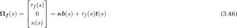

Beam model : variational approach
Introduction to the concept
Design process : overview
Beam model : variational approach
Beam model : equilibrium approach
New discrete beam element
Implementation & test case
J'entre donc maintenant dans le second volet de ma présentation.
Previous Works
4-DOFs Kirchhoff beam model
du Peloux et al., IASS Symp., 2015
Tayeb, PhD thesis, 2015
Lefevre et al., IJSS, 2017
Discrete elastic rod
Bergou et al., ACM Transactions on Graphics, 2008
Nabaei et al., IJSS, 2013
Natural frames and the curve-angle representation
Bishop, The American Mathematical Monthly, 1975
Langer & Singer, SIAM Review, 1996
Ce travail a été inité en 2013 par Frédéric Tayeb avec une forte contribution de Baptiste Lefevre.
Dans le domaine des Computeurs Graphics il y a un intérêt très fort pour la mise au point de modèles mécaniques pour augmenter le réalisme des jeux et des films d'animation, tout en gardant une vraie exigeance en terme de rapidité de calcul.
Building the model
Regardons maintenant comment nous avons construit ce premier modèle de poutre
Assumptions
Centerline > inextensible
Cross-section > planar
Cross-section > normal to the centerline
Material > isotropic & linear-elastic
Le modèle est bâti sous les hypothèses suivantes, bien adaptées aux poutres élancées.
Kinematic Description
arc length > $s$
Centerline = space curve > $\mathbf{x}(s)$
Cross-section = material frame > $\{\mathbf{d}_3,\mathbf{d}_1,\mathbf{d}_2\}(s)$
$\mathbf{d}_1,\mathbf{d}_2$ > principal axis of the cross-section
$\mathbf{d}_3$ > tangent to $\mathbf{x}(s)$
Sous ces hypothèses, la géométrie de la poutre est décrite de manière assez classique comme un milieu curviligne, à l'aide :
d'une courbre paramétrique (notée X)
et d'un repère matériel attaché à la courbe (noté D3, D1, D2), pour décrire sa section.
6-DOFs > 4-DOFs
A priori une telle représentation est entièrement définie par 6 degrés de libertés. 3 en position et 3 en rotation pour l'orientation du repère matériel.
Frenet Frame
Curvature & Torsion > $\kappa(s)\;,\;\tau_f(s)$
Frenet frame > $\{\mathbf{t},\mathbf{n},\mathbf{b}\}\;,\; \mathbf{b} = \mathbf{t} \times \mathbf{n}$
Curvature binormal : $\mathbf{\kappa b} = \kappa * \mathbf{b}$
Commençons par rappeler qu'une courbe de l'espace est entièrement caractérisée par sa courbure et sa torsion géométriques. Connaissant kappa et tau, je suis capable de reconstruire la courbe, à un mouvement solide prêt.
Frenet Frame
$\tau_f$ > angular speed of the osculating plane around $\mathbf{t}$
Where $\kappa = 0$ > undefined, even if $\mathbf{x} \in \mathcal{C}^1$
Not suitable for modeling material frames
La torsion mesure la façon dont la courbe se gauchie dans l'espace. Elle s'interprète comme la vitesse de rotation instantanée du plan osculateur autour de la courbe.
Bishop Frame
A moving frame $\{\mathbf{e}_3,\mathbf{e}_1,\mathbf{e}_2\}$ is adapted to $\mathbf{x}\;$ if $\mathbf{e}_3 = \mathbf{t}$
All adapted moving frames differ only by a scalar angle > $\theta(s)$
Imagine we can construct a moving frame :
adapted to $\mathbf{x}$
fully determined by $\mathbf{x}$
continuous if $\mathbf{x} \in \mathcal{C}^1\;$
This frame would be a perfect reference frame to define the material frame through a single angle $\theta$ ...
... and the kinematic would reduce to only 4-DOFs : $\mathbf{x}\;,\;\theta$
Pour pouvoir définir le repère de Bishop je vous invite d'abord à considérer le cas des repères mobiles, adaptés à la fibre neutre de la poutre. Ces repères ont la particularité d'avoir l'axe E3 tangent à la courbe.
Adapté à la fibre neutre
Entièrement définit par la connaissance de la fibre neutre
Et continu si la courbe est seulement simplement régulière
Alors ce repère fournira une excellente référence pour la définition du repère matériel à l'aide d'une unique variable scalaire theta.
Bishop Frame
Darboux vector > $\mathbf{\Omega}$ = frame's angular speed
For an adapted frame $\mathbf{\kappa b} = k_1\mathbf{e}_1 + k_2\mathbf{e}_2$
For an adapted moving frame $\mathbf{\Omega} = \mathbf{\kappa b} + \tau \mathbf{t}$
On admettra que dans le cas général, l'évolution d'un reprère mobile le long d'une courbe s'exprime en fonction du vecteur de DARBOUX, dont les composantes TAU, K1, K2, s'interprètent comme les vitesses angulaires instanées du repère, exprimées dans sa base propre.
Bishop Frame
Frenet Frame $\{\mathbf{t},\mathbf{n},\mathbf{b}\}$ > $\tau = \tau_f$
Material Frame $\{\mathbf{d}_3,\mathbf{d}_1,\mathbf{d}_2\}$ > $\tau, \kappa_1, \kappa_2\;$ (moment strains)
Bishop Frame $\{\mathbf{t},\mathbf{u},\mathbf{v}\}$ > $\tau = 0$

There is more than one way to frame a curve [Bishop 1975]
Ainsi, le repère de Frenet sera défini par la torsion géométrique de Frenet notée tau_f
Curve-Angle Representation
3 translational DOFs > $\mathbf{x}$
$\mathbf{\kappa b}$ > Bishop frame by parallel transport
1 rotational DOF > $\theta$ defines material frame
[Bishop 1975] > [Langer & Singer 1996] > [Bergou et al. 2008]
Nous possédons maintenant tous les éléments pour établir une description cinématique de notre poutre à seulement 4 degrés de liberté.
Curve-Angle Representation
$\mathbf{x}\,$ and $\theta$ are independant DOFs (* )
$\kappa_1 = \mathbf{\kappa b} \cdot \mathbf{d}_1$
$\kappa_2 = \mathbf{\kappa b} \cdot \mathbf{d}_2$
$\tau = \theta'$
(* ) Since the material frames depend on the rod’s centerline and are not independent degrees of freedom [Bergou 2008]
Contrairement à Bergou, nous considérons que les degrés de liberté du système sont bien indépendants.
La fibre neutre est paramétrée par son abscisse curviligne
En mesurant KB, on construit le repère de Bishop par transport parallèle sur la fibre neutre
On obtient alors le repère matériel par une rotation du repère de bishop d'un angle THETA autour de la courbe
A partir du repère matériel on calcule les courbures matérielles
Finalement on accède aux moments de torsion et de flexion par les équations constitutives
Variational Formulation
Nous allons maintenant calculer les efforts internes quasi-statiques qui s'exercent sur la poutre, par une approche variationnelle.
Elastic Energy
Overbars > stress-free configuration
Coupling between bending and torsion
Quasi-static out-of-balance internal forces $(\mathbf{f})$ and moments $(\mathbf{m})$
Quasistatic assumption [Bergou et al. 2008]
Pour celà nous formons l'énergie de déformation élastique du problème, comme la somme de l'énergie de flexion et de l'énergie de torsion.
Internal Forces and Moments
Curvatures > bending moment
Twist > twisting moment
Variation of moment > shear force
Inextensibility > stiff vs. elastic constraint > axial force
Après quelques pages de calcul on peu écrire de manière condensée l'effort tranchant et le moment de torsion linéique agisssant sur la poutre.
Dynamic
A ce stade, j'ai donc tous les éléments nécessaires pour suivre l'évolution dynamic de la poutre.
Dynamics
Bergou et al. 2008 > Symplectic Euler integrator (* ) + Newton
Lefevre et al. 2017 > Dynamic Relaxation
Inextensibility (reprojection vs. penalty)
Quasistatic assumption
(* ) Also known as dynamic relaxation, Verlet integration or the semi-implicit Euler, symplectic Euler, semi-explicit Euler, Euler–Cromer or Newton–Størmer–Verlet (NSV) method. [Williams 2011]
Je ne vais pas m'attarder sur cet aspect. Je veux juste mentionner que, dans notre approche, seul l'état d'équilibre final de la structure nous intéresse, et que donc nous avons utilisé une méthode de résolution des équations par relaxation dynamique.
Results
Model in the smooth world [Tayeb & Lefevre]
Indepence of the DOFs [du Peloux]
Locality of the expressions [du Peloux]
Physical meaning > Kirchhoff [du Peloux]
En conclusion de cette partie nous avons réussi à constuire un élément de poutre à 4 dégrés de liberté capable de prendre en compte les phénomènes de flexion et de torsion.
Limitations
Static equations only > dynamical equations ?Inextensibility as a stiff constraint ($\mathbf{N}$)
External loads ($\mathbf{F}_{ext} \;,\;\mathbf{M}_{ext}\;,\;\mathbf{f}_{ext} \;,\;\mathbf{m}_{ext}$)
Transfer of forces and momentsBoundary conditions and complex connections
Bien que ce premier modèle remplisse une partie de nos objectifs, il comporte de sérieuses limitations pour un usage en conditions réélles.
La dynamique de la poutre n'est pas traitée de manière unifiée
L'effort axial n'est pas modélisé (il est compris comme une contrainte)
Le modèle ne traite pas des efforts appliqués (ce qui est pourtant nécessaire pour étudier une structure)
La question des conditions aux limites et du transfert d'efforts au niveau des connexions n'est pas modélisée à ce stade